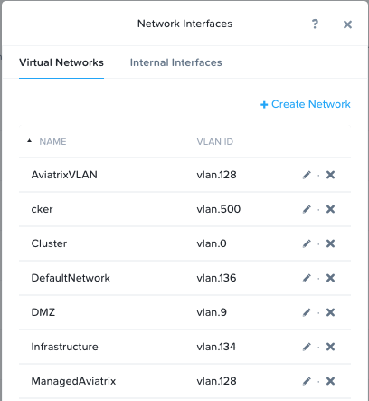
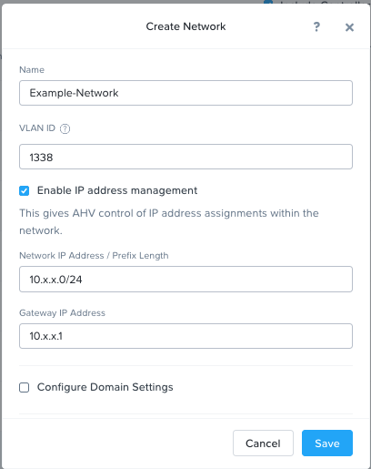

Configuring Virtual Networks¶
VM ทุกเครื่องที่อยูใน AHV จะใช้ Open vSwitch (OVS) ในการเชื่อมต่อถึงกัน โดย OVS เป็น open source software switch ที่ถูกนำมาใช้ใน Linux kernel และถูกออกแบบมาใช้กับการทำงานแบบ multi-server ในรูปแบบของ virtualization โดยที่ AHV ทุก Node จะมี OVS ประจำอยู่ และทุก OVS จากทุก Node นั้น จะรวมกันเป็น Single logical switch.
ในแต่ละ node จะมี uplinked เชื่อมต่อไปยัง physical switch ด้วย port trunked/tagged สำหรับการใช้งานในหลายๆ VLANs และจะถูกนำไปสร้างเป็น virtual networks เพื่อให้ VM ได้ใช้งานต่อไป.
เราสามารถสร้างกำหนด VM networking ได้อย่างง่ายผ่าน Prism หรืออีกวิธีคือการใช้ CLI/REST ใน Lab ต่อไปเราจะได้สร้าง Virtual network ใน AHV และในแบบฝึกหัด Deploying Workloads เราจะได้ลองสร้าง Virtual NICs และ นำไปใช้งานกับ Virtual network ที่เราได้สร้างไว้.
Note
ใน Lab นี้ จะเป็นการสร้าง networks ด้วย VLANs ที่ไม่มีอยู่จริง นั่นหมายความว่า จะไม่มี VM เครื่องไหนที่จะสามารถเชื่อมต่อออกไปภายนอก host ได้ วัตถุประสงค์ของ Lab นี้เพื่อศึกษาความผิดพลาดที่เกิดขึ้นจากการสร้าง networks ด้วย VLANs ที่ไม่มีอยู่จริง.
สามารถเรียนรู้เพิ่มเติมเรื่อง AHV Networking ได้ที่นี่.
Note
ภายใน Labs นี้ จะมีการยกตัวอย่างด้วย XYZ หรือ Initial อยู่บ่อยครั้ง ดังนั้นให้ผู้เรียนสังเกตุ และเปลี่ยนตัวอย่างดังกล่าวให้เป็นชื่อของผู้เรียนเอง หรือเป็น User#No. ที่ได้รับมอบหมาย
Setup User VM Network¶
เข้า Prism Element และสร้าง Network เพื่อใช้สำหรับ VM Server เราสามารถสร้างได้หลาย vlan โดยให้เรากำหนดเลข vlan อะไรก็ได้ที่ไม่ใช่ 0 และไม่ต้องเปิดการใช้งาน IP Address Management.
ใน Prism Element > VM, คลิก**VMs**, แล้วคลิก**Network Config**.
Select Virtual Networks, then คลิก**+ Create Network**.
กำหนดค่าต่างๆ ดังนี้ แล้วคลิก**Save**:
Name - Initials-Network
VLAN ID - A value (< 4096) ที่ไม่ใช่ Primary or Secondary network VLANs ที่ใช้อยู่
ไม่ต้องเลือก Enable IP Address Management
ตัวอย่างหลังจากทำการสร้าง VM Network.
การสร้าง Virtual network นี้จะสามารถเชื่อมต่อไปยัง nodes อื่นๆที่อยู่ใน Cluster ได้ Virtual networks ใน AHV จะมีลักษณะเหมือนกับ Distributed Virtual Switches ใน ESXi นั่นหมายความว่าเราไม่จำเป็นจะต้อง สร้าง Virtual networks settings ที่เหมือนกันในทุกๆ Host ที่อยู่ใน Cluster เมื่อสร้าง VMs ใน IPAM management networks เรายังสามารถเลือกที่จะระบุ IP ได้ด้วยตนเองระหว่างที่สร้าง vNIC ได้เช่นกัน.
Setup User VM Network with IPAM¶
สร้างอีกหนึ่ง virtual network แต่ครั้งนี้เปิดใช้งาน IPAM.
กำหนดค่าต่างๆ ดังนี้ แล้วคลิก**Save**:
Name - Initials-Network_IPAM
VLAN ID - A value (< 4096) ที่ไม่ใช่ Primary or Secondary network VLANs ที่ใช้อยู่
เลือก Enable IP Address Management
Network IP Address / Prefix Length - 10.0.0.0/24
Gateway - 10.0.0.1
ไม่ต้องเลือก Configure Domain Settings
Create Pool - 10.0.0.100-10.0.0.150
ไม่ต้องเลือก Override DHCP Server
Note
สามารถสร้างได้หลาย Pool ใน Network.
การกำหนด Virtual Network สามารถนำไปใช้งานได้ในทุก Nodes ใน cluster โดย VM ที่มี vNICs จะได้รับ DHCP จากช่วง VLAN ที่ถูกกำหนดไว้ โดย IP ที่ถูกกำหนดให้นี้ จะถูกกำหนดให้กับ VM นั้นๆ ไปตลอดทุกครั้งการใช้งานเลย ซึ่งก็จะสะดวกสำหรับหลาย workload ที่สร้างขึ้นมา ก็เป็นการเลี่ยงความจำเป็นที่จะต้องมาทำการจอง DHCP หรือทำการกำหนด static IP เอง.